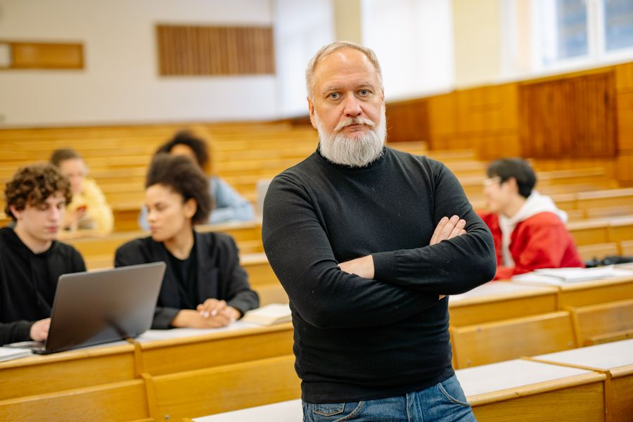

你不知道的德国 · 21
🎓 德国大学体系
Uni vs FH、Semesterticket学期票、BAföG助学金、Mensa食堂——在德国上大学和你想的不一样
Uni vs FH：两种大学，两种人生
德国高等教育体系分为两大类：Universität（综合性大学，简称Uni）和Fachhochschule（应用科学大学，简称FH）。Uni偏重理论研究和学术，可以授予博士学位；FH偏重实践应用，和企业合作紧密，教授通常有丰富的行业经验。
德国人对Uni和FH没有高低贵贱之分——FH毕业生因为动手能力强，在就业市场上同样受欢迎。很多德国高中毕业生会根据职业规划选择FH而不是Uni。对于中国留学生来说，如果你未来想做研究或读博，选Uni；如果你想尽快进入职场，FH可能更适合。
🇩🇪 Deutsche Originalfassung / 德语原文
Das deutsche Hochschulsystem unterscheidet zwischen Universität (Uni) und Fachhochschule (FH). Die Uni legt den Schwerpunkt auf theoretische Forschung und kann Doktortitel verleihen. Die FH ist praxisorientiert, arbeitet eng mit der Industrie zusammen und die Professoren haben meist langjährige Berufserfahrung außerhalb der Hochschule.
Semesterticket：一张票坐遍全州
德国大学的Semesterticket（学期票）是全世界最划算的学生福利之一。每学期交约200-400欧的"注册费"包含了一张可以在整个联邦州（甚至跨州）乘坐公交、地铁、区域火车（RE/RB）的学期票。你可以在周末坐慢车从慕尼黑到汉堡，不用多花一分钱。
不过学期票通常不包含ICE（高铁），只适用于Nahverkehr（近程交通）。2024年起，德国还推出了Deutschlandticket（49欧月票），很多大学的学期票也升级成了全国通用的模式。
💡 Semesterticket本质是一种"强制团购"——所有学生必须交钱，换来的是极低的单价。这体现了德国大学自治和学生团结的传统。
BAföG：国家助学金，一半白给一半无息贷款
BAföG（Bundesausbildungsförderungsgesetz，联邦教育促进法）是德国政府的教育资助计划。符合条件的德国学生每月最高可获约934欧（2024年标准），其中一半是赠款（不需要还），另一半是免息贷款。毕业后五年内还清即可，还有各种减免政策。
对于外国留学生，BAföG的门槛较高——通常需要你或你的父母在德国有长期居留和工作经历。但很多中国留学生可以申请Deutschlandstipendium（德国奖学金，每月300欧）或各大学的专项奖学金。
Mensa：学生食堂的文化
德国的大学食堂（Mensa）由Studentenwerk（学生服务中心）运营，价格极低——一顿完整的午餐约2.5-5欧。Mensa的菜色通常包括两三种主菜、素食选项、沙拉吧和甜品。每天中午，Mensa是校园里最热闹的地方。
德国Mensa有一个特色：素食和纯素选项占比很高。很多Mensa有专门的"vegan"窗口。这也反映了德国年轻人中素食主义的流行趋势。另外，Mensa不供应晚餐——德国人晚饭习惯吃面包（Abendbrot），食堂只在中午开放。
🇩🇪 Deutsche Originalfassung / 德语原文
Die Mensa wird vom Studentenwerk betrieben und bietet Studierenden günstige Mahlzeiten. Ein komplettes Mittagessen kostet etwa 2,50 bis 5 Euro. Es gibt täglich mehrere Hauptgerichte, vegetarische und vegane Optionen sowie eine Salatbar. Die Mensa öffnet nur mittags — abends essen die Deutschen traditionell Abendbrot.
Bibliothek & Lernraum：学习的阵地
德国大学的图书馆（Bibliothek，简称Bib）是每个学生的第二个家。考试季（Klausurenphase）期间，图书馆24小时开放，学生带着睡袋通宵占座是常见的景象。除了图书馆，大学还提供Lernraum（自习室）和Arbeitsraum（小组讨论室），可以在线预订。
德国大学的图书馆有一个特色：Fachbibliothek（专业图书馆）。每个学院有自己的专业图书馆，藏书更精深。另外，通过Fernleihe（馆际互借），你可以从全德国任何一所大学图书馆免费调阅图书。
考试制度：1.0到5.0的德国分数
德国的考试成绩采用1.0到5.0的评分制，1.0最高（sehr gut，优秀），4.0及格（ausreichend），5.0不及格（nicht ausreichend）。考试形式多样：Klausur（笔试闭卷）、Hausarbeit（课程论文，10-20页）、mündliche Prüfung（口试）、Referat（课堂报告）。
和中国大学"一考定终身"不同，德国很多课程的成绩由多个部分组成：出勤+课堂报告+期末考试。另外，德国大学普遍没有"补考"（Nachprüfung）——如果你两次没通过同一门课的考试，你就永远不能在全德国任何一所大学修这门课了。这叫"endgültig nicht bestanden"（最终不及格），是每个德国大学生的噩梦。
🇩🇪 Deutsche Originalfassung / 德语原文
Das deutsche Notensystem reicht von 1,0 (sehr gut) bis 5,0 (nicht ausreichend). Die typischen Prüfungsformen sind: Klausur (schriftliche Prüfung), Hausarbeit (10-20 Seiten), mündliche Prüfung und Referat. Eine Besonderheit: Wer eine Prüfung zweimal endgültig nicht besteht, darf dieses Fach an keiner deutschen Hochschule mehr studieren.
📝 核心词汇表 / Wortschatz
本集文章里的关键德语词汇，配例句加深理解
die Universität, -en综合性大学
📌 Ich studiere an der Universität München. — 我在慕尼黑大学学习。
die Fachhochschule, -n应用科学大学
📌 Die Fachhochschule ist praxisorientierter als die Uni. — FH比Uni更注重实践。
das Semesterticket, -s学期票
📌 Mit dem Semesterticket kann ich im ganzen Bundesland fahren. — 凭学期票我可以在整个联邦州乘车。
das BAföG联邦教育资助
📌 Er bekommt BAföG und muss nur die Hälfte zurückzahlen. — 他获得BAföG，只需要还一半。
die Mensa, Mensen大学食堂
📌 In der Mensa kostet das Mittagessen nur 3 Euro. — 在食堂午饭只要3欧。
die Bibliothek, -en图书馆
📌 Während der Klausurenphase ist die Bibliothek rund um die Uhr geöffnet. — 考试季图书馆24小时开放。
die Klausur, -en笔试
📌 Die Klausur findet am Ende des Semesters statt. — 笔试在学期末进行。
die Hausarbeit, -en课程论文
📌 Für dieses Seminar muss ich eine 15-seitige Hausarbeit schreiben. — 这门课我要写15页论文。
die Note, -n分数/成绩
📌 Er hat die Prüfung mit der Note 1,3 bestanden. — 他以1.3分的成绩通过了考试。
das Stipendium, Stipendien奖学金
📌 Sie hat ein Stipendium von der DAAD bekommen. — 她从DAAD获得了奖学金。
Leons Deutschzentrum
📖 想读更多德国冷知识？
51 期「你不知道的德国」深度专栏，都在 Leon 德语学习中心。
📚 进入网站